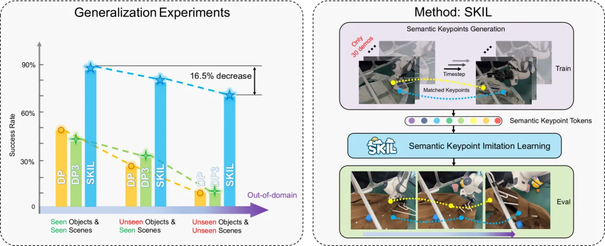
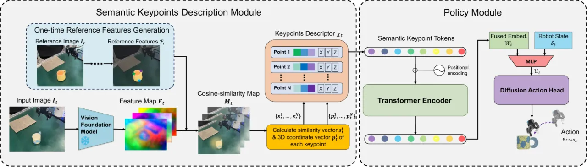
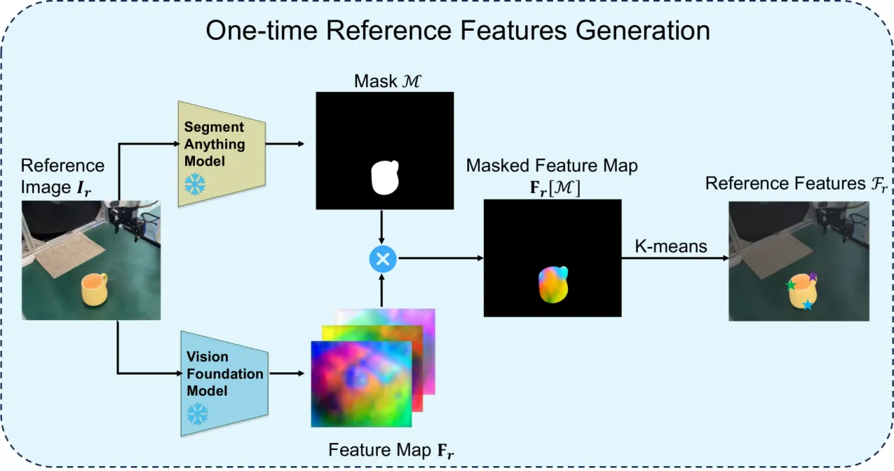
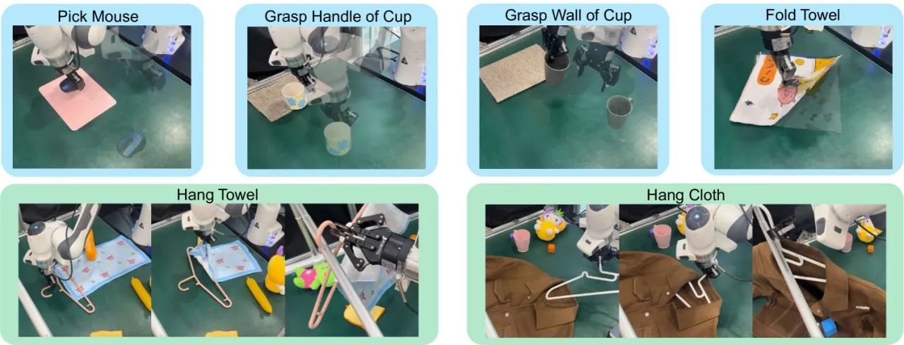
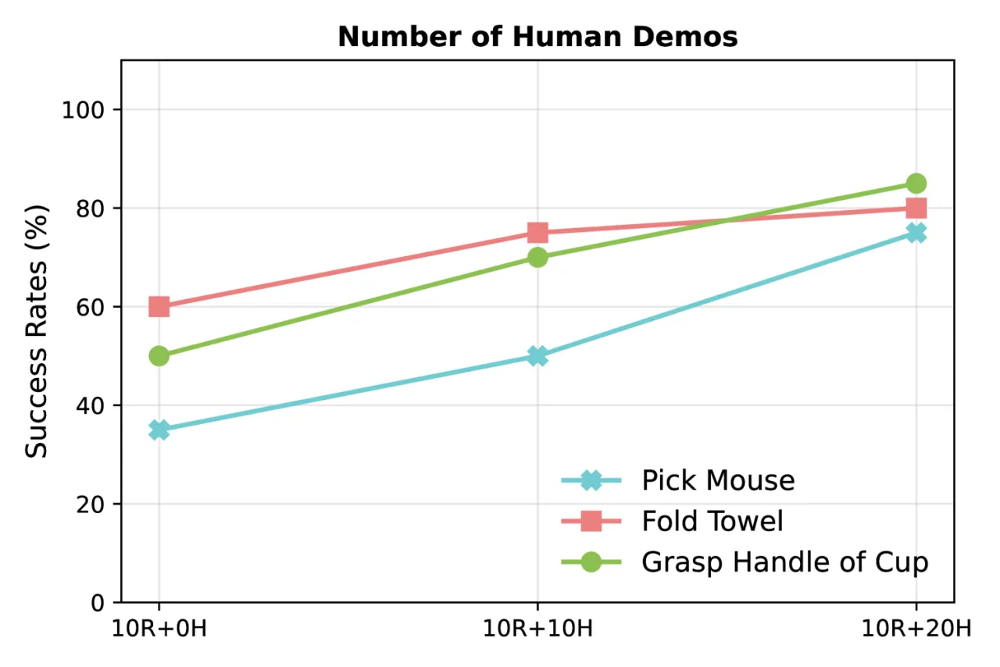

SKIL 借助 vision foundation model 自动抽取语义关键点（semantic keypoints），并为其构造 descriptor 作为稀疏观测，让模仿学习在极低样本量下依然可泛化、可完成长程任务。真实实验中它把基线方法的成功率翻倍，挂毛巾这类长程任务仅需 30 条示范 即可达到约 70% 成功率，而以往方法完全失败；由于关键点抽象与本体无关，SKIL 还能天然利用人类视频进行 cross-embodiment 学习。
衣物操作、桌面整理这类真实任务，要求策略同时具备泛化性、高精度与长程能力。模仿学习虽有效，但复杂任务仍需大量专家示范，样本复杂度高、数据采集昂贵。SKIL 的核心洞见是：真实操作任务其实很少依赖物体的颜色、纹理或几何细节。
"when picking up a cup, a smart agent should focus mainly on the position of the handle instead of its color or shape." —— 稀疏的语义关键点（如杯柄、衣领与袖口）才是最关键的 task-relevant information，它们在不同物体与场景间高度一致，从而缓解过拟合。

SKIL 由两大模块组成：Semantic Keypoints Description Module 从 RGBD 帧中获得语义关键点并计算其 descriptor；Policy Module 用 transformer encoder 融合关键点信息，再由 diffusion action head 输出动作序列。视觉基础模型近年在 semantic correspondence 上的成功，正是 SKIL 抽取带语义对应关键点的动机。

每个任务只需一张参考图即可自动检测参考关键点与特征，之后贯穿整个训练与评估。流程：用 SAM 得到物体 mask，用 vision foundation model（如 DiFT、RADIO）提取 patch-wise 特征图，再对 mask 内特征做 K-means 聚类得到 reference features。

对当前帧，基于参考特征构造 cosine-similarity map；关键点的 descriptor 由该相似度图与原始 depth image 共同计算得到。这样的描述子既包含语义对应信息，又携带 3D 空间线索，且天然稀疏——极大降低了问题维度，是数据高效的来源。
每个关键点 descriptor 先被嵌入 d 维隐空间并加 positional encoding，transformer encoder 处理全部 token 后取所有输出 token 的均值（而非 [CLS] token）得到 fused embedding W_t；再以其为条件由 diffusion action head 生成动作。
由于语义关键点抽象不含本体信息，可利用包括人类视频在内的多样数据源。受 ATM 启发，SKIL-H 把关键点轨迹预测作为中间任务，含两个模块：Trajectory Prediction Module（从纯视频预测未来关键点轨迹，用机器人 + 人类示范共同训练）与 Trajectory-to-Action Module（把预测轨迹映射为机器人动作，仅用机器人示范训练）。
硬件为配备 Robotiq 夹爪的 Franka 机械臂，固定 Zed2 立体相机采集 RGBD（不使用腕部相机）。共 6 个真实任务（4 个 short-horizon + 2 个 long-horizon），每物体 5 次随机初始化试验。基线包括 DP（Diffusion Policy）、DP3、RISE、GenDP-S。

| Method | Pick Mouse | Grasp Handle | Grasp Wall | Fold Towel | Hang Towel | Hang Cloth | Avg (Test) |
|---|---|---|---|---|---|---|---|
| DP | 4% | 36% | 36% | 50% | 0% | 12% | 23.0% |
| DP3 | 18% | 32% | 18% | 58% | 0% | 24% | 25.0% |
| RISE | 14% | 34% | 12% | 32% | 0% | 16% | 18.0% |
| GenDP-S | 32% | 32% | 30% | 58% | 0% | 28% | 30.0% |
| SKIL (Ours) | 72% | 94% | 80% | 72% | 72% | 47% | 72.8% |
数值为测试阶段（unseen 物体，同类别）成功率。SKIL 训练物体平均 81.7%、测试物体 72.8%，两个长程任务上所有基线均为 0%。
| Method | Situation 0 原始 | Situation 1 加干扰物 | Situation 2 换背景 | Situation 3 二者叠加 |
|---|---|---|---|---|
| DP | 4/10 | 4/10 | 0/10 | 0/10 |
| DP3 | 5/10 | 1/10 | 4/10 | 0/10 |
| RISE | 4/10 | 3/10 | 2/10 | 1/10 |
| GenDP-S | 5/10 | 3/10 | 5/10 | 2/10 |
| SKIL (Ours) | 9/10 | 9/10 | 8/10 | 8/10 |
在加入干扰物、换背景乃至二者叠加的最难 Situation 3 下，SKIL 仍保持一致的高性能，而基线大幅下滑。
对 Hang Towel 与 Hang Cloth 两个长程任务，SKIL 仅用 30 条示范 就达到高成功率（Hang Towel 72%），而所有基线完全失败；基线常见失败模式是"跳过"折叠等中间阶段。short-horizon 任务上 SKIL 在 20 条示范时已达 90% 级别。

SKIL-H 用 10 条机器人示范 + 0~20 条人类视频。在最难的 Pick Mouse 上，20 条人类视频带来 40% 的成功率提升；更多人类视频还使评估时动作序列更平滑，印证了关键点描述带来的成功 cross-embodiment 抽象。
"its capability is strictly upper-bounded by the capability of its upstream vision foundation model." 例如作者尝试的 Bulb Assembly 任务失败，因为当前模型（DiFT）抽取的关键点精度达不到该任务的高要求。
SKIL 只从相关物体上抽取关键点，缺乏对环境的细致感知；在有多个障碍物的任务中可能违反 safety constraints。作者提出未来可发展一种高效的、基于关键点的环境表示来扩展能力。